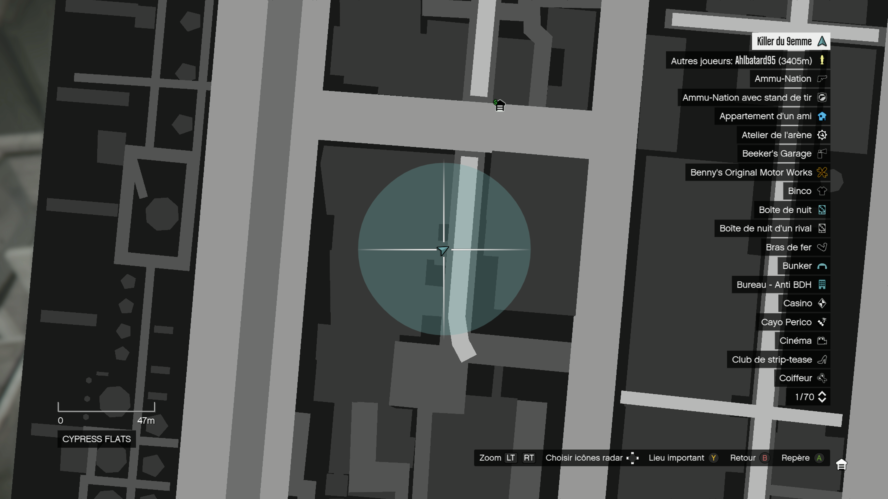
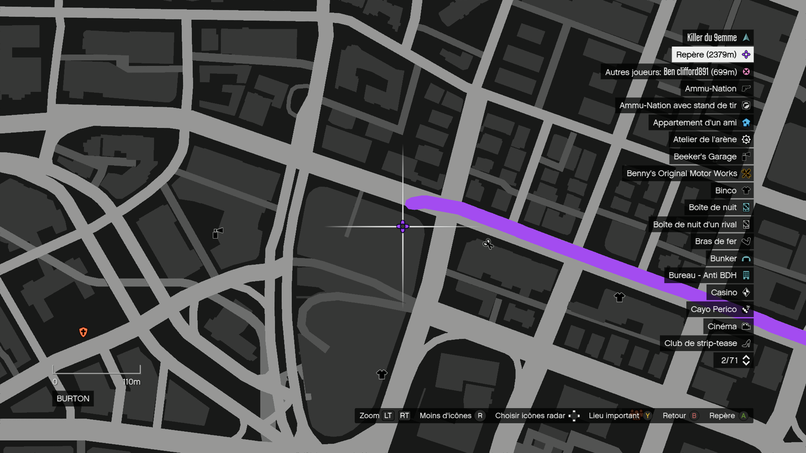
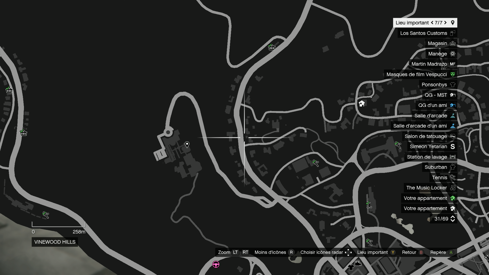
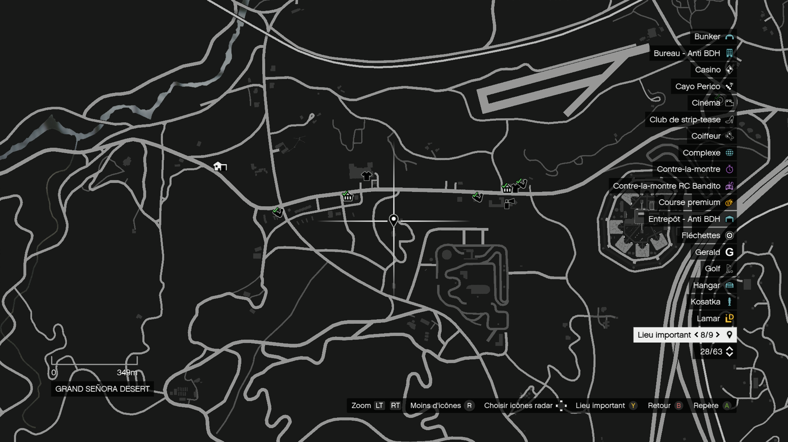
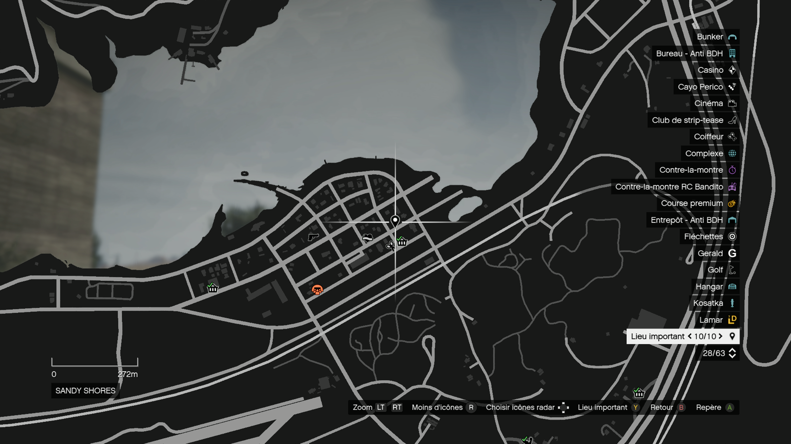
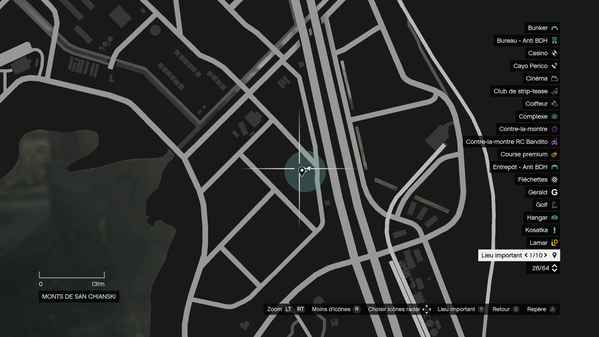
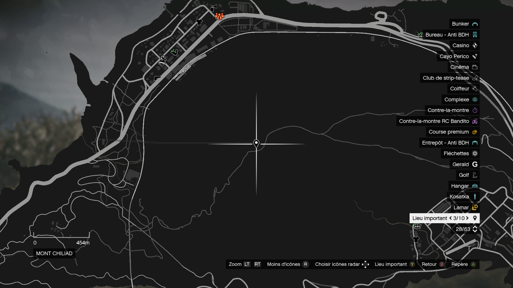
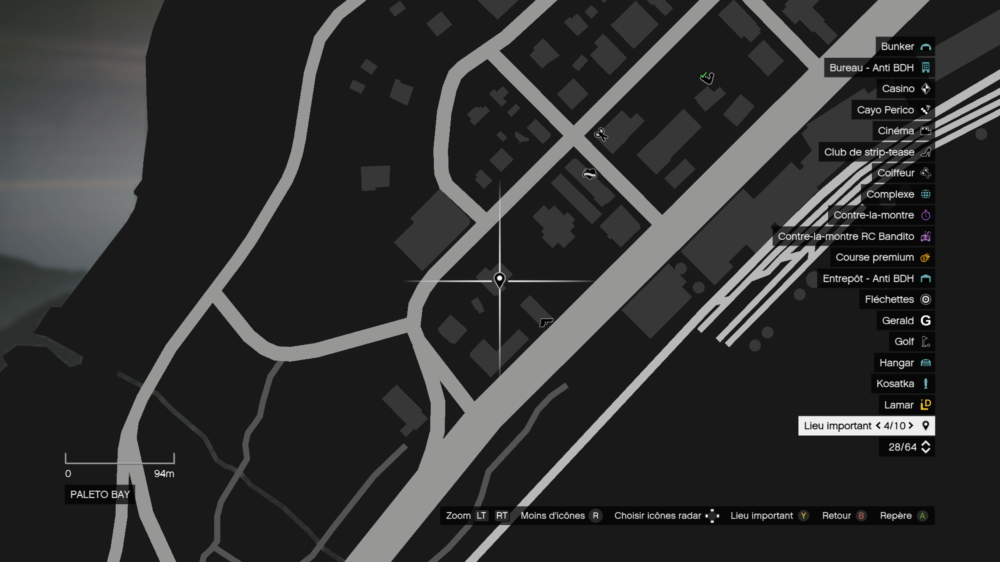

1/10 sud-est de la vile
Alors nous allons commencer par le sud de la ville puis allons suivre un chemin logique, le premier est sur le toit d'une usine voici les images pour aider


2/10 Centre-ville
La seconde antenne se trouve en plein centre-ville non loing du Los Santos Custom le plus fréquenter


3/10 Plage a coté au-dessus du dispensaire
La troisième antenne se trouve à la plage au-dessus du dispensaire de cannabis


4/10 Nord-ouest de la vile
La quatrième antenne se trouve au niveau du grand bâtiment au nord-ouest de la ville


5/10 Vinewood hills
La cinquième antenne se trouve a vinewood hills


6/10 Grand senora desert
La sisieme antenne se trouve dans la Grande señora desert


7/10 sandy shores
La septième antenne se trouve à Sandy Shores


8/10 Champ des O'neils
La huitième antenne se trouve dans un des champs des O'neils


9/10 Sommet du mont chiliad
La neuvième antenne se trouve au sommet du mon chiliad


10/10 Paleto bay
La dixième antenne se trouve a paleto Bay
